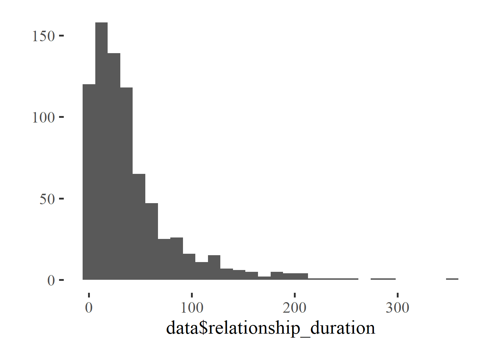
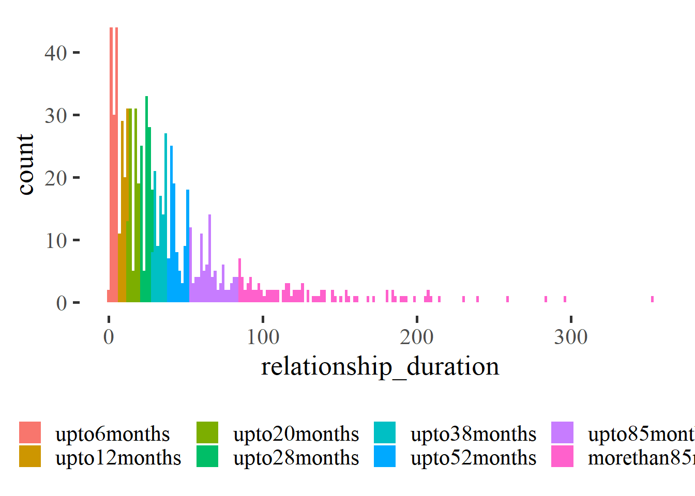

Datawrangling
Data and Functions
Select Variables
Initial Survey
data = all_surveys %>%
select(session,
age,
education_years,
net_income,
starts_with("bfi_agree"),
starts_with("bfi_consc"),
starts_with("bfi_open"),
starts_with("bfi_extra"),
starts_with("bfi_neuro"),
religiosity,
pregnant_stress,
duration_relationship_years,
duration_relationship_month,
days_with_partner,
nights_with_partner,
starts_with("soi_r"),
soi_r_behavior,
soi_r_desire,
number_sexual_partner,
contraception_at_all,
contraception_method,
contraception_approach,
contraception_method_broad,
contraception_meeting_partner,
partner_attractiveness_face,
partner_attractiveness_body,
relationship_satisfaction_overall,
relationship_satisfaction_2,
relationship_satisfaction_3,
relationship_problems_R,
relationship_conflict_R,
satisfaction_sexual_intercourse,
reasons_for_exclusion,
pregnant_trying)Diary
data_diary = diary %>%
select(session,
reasons_for_exclusion,
high_libido,
sex_active, sex_activity_anal_sex, sex_activity_bdsm_dom, sex_activity_bdsm_sub,
sex_activity_cuddling, sex_activity_cunnilingus, sex_activity_cybersex,
sex_activity_dirty_talk,
sex_activity_fellatio, sex_activity_kissing, sex_activity_masturbated_by_partner,
sex_activity_masturbated_partner, sex_activity_masturbation, sex_activity_other,
sex_activity_phone_skype_sex, sex_activity_pornography, sex_activity_sex,
sex_activity_touch_other,
sex_activity_toys, sex_activity_unclear, sex_other, sex_solo, sex_unclear,
days_done)Exclusion
Initial Survey
n_excluded = data %>% filter(reasons_for_exclusion != "") %>% nrow()
data = data %>% filter(reasons_for_exclusion == "")475 people were excluded.
Diary
Exclusion criteria based on initial
session_codes = data$session
data_diary = data_diary %>%
filter(session %in% session_codes)
length(data_diary$session)## [1] 53483The 1185 participants filled out 53483.
Skipped diary entry
n_skipped_diary = data_diary %>%
filter(reasons_for_exclusion %contains% "skipped_diary_entry") %>%
count()
data_diary = data_diary %>%
filter(!(reasons_for_exclusion %contains% "skipped_diary_entry"))748 days were skipped.
Dishonest answers
n_dishonest = data_diary %>%
filter(reasons_for_exclusion %contains% "dishonest") %>%
count()
data_diary = data_diary %>%
filter(!(reasons_for_exclusion %contains% "dishonest"))142 days contained dishonest answers.
Filled out less than 14 days
number_of_days = data_diary %>%
group_by(session) %>%
summarise(n = n()) %>%
rename(number_of_days = n)## `summarise()` ungrouping output (override with `.groups` argument)data_diary = left_join(data_diary, number_of_days, by = "session")
data_diary_include = data_diary %>%
filter(as.numeric(number_of_days) >= 14)
data_diary_exclude = data_diary %>%
filter(as.numeric(number_of_days) < 14)
data_diary = data_diary_include173 participants were excluded because they filled out less than 14 days - resulting in 1027 excluded days.
Summary
In total 971 participants with 51566 diary days were included for the analyses in which outcomes were based on diary information.
Wrangle data
Relationship status (single vs partnered)
data = data %>% mutate(
relationship_status = ifelse(is.na(duration_relationship_month), "Single", "Partnered"))
qplot(data$relationship_status) + coord_flip()
Relationship duration
Linear relationship duration
data = data %>%
mutate(relationship_duration = duration_relationship_years * 12 +
duration_relationship_month)
qplot(data$relationship_duration)## Don't know how to automatically pick scale for object of type haven_labelled. Defaulting to continuous.## `stat_bin()` using `bins = 30`. Pick better value with `binwidth`.## Warning: Removed 405 rows containing non-finite values (stat_bin).
Factor1 relationship duration
Divide relationship duration into quartiles
data = data %>%
mutate(relationship_duration_factor =
factor(ifelse(relationship_status == "Single",
"Single",
ifelse(relationship_duration <= 12,
"upto12months",
ifelse(relationship_duration <= 28,
"upto28months",
ifelse(relationship_duration <= 52,
"upto52months",
ifelse(relationship_duration > 52,
"morethan52months",
NA))))),
levels = c("Single", "upto12months",
"upto28months", "upto52months",
"morethan52months")))
data %>%
group_by(relationship_duration_factor) %>%
summarise(count = n()) %>%
add_column(duration_in_years = c("Single",
"upto1year",
"upto2.3years",
"upto4.3years",
"morethan4.3years")) %>%
select(relationship_duration_factor, duration_in_years, count) %>%
kable()## `summarise()` ungrouping output (override with `.groups` argument)| relationship_duration_factor | duration_in_years | count |
|---|---|---|
| Single | Single | 405 |
| upto12months | upto1year | 198 |
| upto28months | upto2.3years | 200 |
| upto52months | upto4.3years | 190 |
| morethan52months | morethan4.3years | 192 |

ggplot(data, aes(relationship_duration)) +
geom_histogram(aes(fill = relationship_duration_factor), bins = 200) +
theme(legend.title = element_blank(), legend.position = "bottom")## Don't know how to automatically pick scale for object of type haven_labelled. Defaulting to continuous.## Warning: Removed 405 rows containing non-finite values (stat_bin).
Factor2 relationship duration
Divide relationship duration into 8 quantiles
quantiles = quantile(as.numeric(data$relationship_duration),
na.rm = T,
probs = c(0, 0.125, 0.25, 0.375, 0.5,0.625, 0.75, 0.875, 1))
data = data %>%
mutate(relationship_duration_factor2 =
factor(ifelse(relationship_status == "Single",
"Single",
ifelse(relationship_duration <= quantiles[2],
"upto6months",
ifelse(relationship_duration <= quantiles[3],
"upto12months",
ifelse(relationship_duration <= quantiles[4],
"upto20months",
ifelse(relationship_duration <= quantiles[5],
"upto28months",
ifelse(relationship_duration <= quantiles[6],
"upto38months",
ifelse(relationship_duration <= quantiles[7],
"upto52months",
ifelse(relationship_duration <= quantiles[8],
"upto85months",
ifelse(relationship_duration > quantiles[8],
"morethan85months",
NA))))))))),
levels = c("Single", "upto6months", "upto12months",
"upto20months", "upto28months",
"upto38months", "upto52months",
"upto85months", "morethan85months")))
data %>%
group_by(relationship_duration_factor2) %>%
summarise(count = n()) %>%
add_column(duration_in_years = c("Single",
"upto0.5years",
"upto1year",
"upto1.7year",
"upto2.3years",
"upto3.2years",
"upto4.3years",
"upto7.1years",
"morethan7.1years")) %>%
select(relationship_duration_factor2, duration_in_years, count) %>%
kable()## `summarise()` ungrouping output (override with `.groups` argument)| relationship_duration_factor2 | duration_in_years | count |
|---|---|---|
| Single | Single | 405 |
| upto6months | upto0.5years | 120 |
| upto12months | upto1year | 78 |
| upto20months | upto1.7year | 99 |
| upto28months | upto2.3years | 101 |
| upto38months | upto3.2years | 96 |
| upto52months | upto4.3years | 94 |
| upto85months | upto7.1years | 94 |
| morethan85months | morethan7.1years | 98 |
qplot(data$relationship_duration_factor2) +
theme(axis.text.x = element_text(angle = 90, vjust = 0.5, hjust=1))
ggplot(data, aes(relationship_duration)) +
geom_histogram(aes(fill = relationship_duration_factor2), bins = 200) +
theme(legend.title = element_blank(), legend.position = "bottom")## Don't know how to automatically pick scale for object of type haven_labelled. Defaulting to continuous.## Warning: Removed 405 rows containing non-finite values (stat_bin).
Factor3 relationship duration
https://sci-hub.st/10.1016/j.ssresearch.2015.01.009 Effects of relationship duration, cohabitation, and marriage on the frequency of intercourse in couples: Findings from German panel data
Relationship Duration * 0-5 months * 6-11 months * 1-2 years * 2-3 years * 3-4 years * 4-5 years * 5-6 years * 6-8 years * 8-10 years * 10-12 years * 12-14 years * 14-16 years * > 16 years
data = data %>%
mutate(relationship_duration_factor3 =
factor(ifelse(relationship_status == "Single",
"Single",
ifelse(relationship_duration < 6,
"0to5months",
ifelse(relationship_duration < 12,
"6to11months",
ifelse(relationship_duration <= 24,
"1to2years",
ifelse(relationship_duration <= 36,
"2to3years",
ifelse(relationship_duration <= 48,
"3to4years",
ifelse(relationship_duration <= 60,
"4to5years",
ifelse(relationship_duration <= 72,
"5to6years",
ifelse(relationship_duration <= 96,
"6to8years",
ifelse(relationship_duration <= 120,
"8to10years",
ifelse(relationship_duration > 120, "morethan10years",
NA))))))))))),
levels = c("Single", "0to5months", "6to11months",
"1to2years", "2to3years",
"3to4years", "4to5years",
"5to6years", "6to8years",
"8to10years", "morethan10years")))
data %>%
group_by(relationship_duration_factor3) %>%
summarise(count = n()) %>%
kable()## `summarise()` ungrouping output (override with `.groups` argument)| relationship_duration_factor3 | count |
|---|---|
| Single | 405 |
| 0to5months | 92 |
| 6to11months | 88 |
| 1to2years | 162 |
| 2to3years | 125 |
| 3to4years | 94 |
| 4to5years | 53 |
| 5to6years | 45 |
| 6to8years | 47 |
| 8to10years | 26 |
| morethan10years | 48 |
qplot(data$relationship_duration_factor3) +
theme(axis.text.x = element_text(angle = 90, vjust = 0.5, hjust=1))
ggplot(data, aes(relationship_duration)) +
geom_histogram(aes(fill = relationship_duration_factor3), bins = 200) +
theme(legend.title = element_blank(), legend.position = "bottom")## Don't know how to automatically pick scale for object of type haven_labelled. Defaulting to continuous.## Warning: Removed 405 rows containing non-finite values (stat_bin).